壊れてもまた買い直したい、私の愛用キッチン道具6選。
動画では話しきれなかった、型番や選ぶときの注意点もまとめています。
今回は、私の台所に欠かせない「ずっと使い続けたい」道具を6つご紹介します。
いいところだけでなく、実際に使っていて
「ここは注意が必要だな」と感じる部分も正直に書きました。
お気に入りの道具探しの参考になればうれしいです。
1. かごや 杉せいろ 18cm・24cm
型番：0014(18cm 鍋セット)／8377(24cm 鍋セット)
私の台所の相棒です。
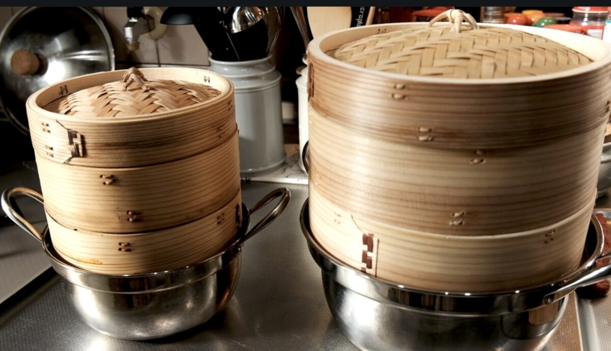
木が食材の余分な水分を調整してくれるので、楽においしく仕上がります。
杉の香りもお気に入りです。
無印良品や3COINSなどで安く売られているせいろは、ほとんどが竹製です。
安いので試しに使ってみたいときにはいいのですが、どうしても耐久性は低め。
価格と耐久性のバランスがいいのは杉だと思っています。
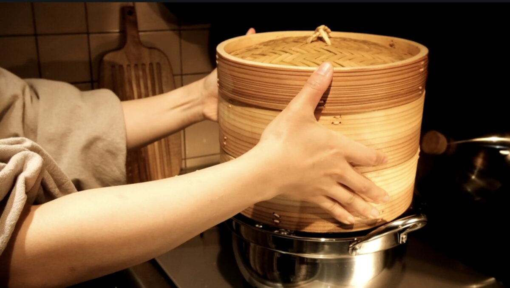
レンジやステンレス製の蒸し器でも、同じ用に加熱はできますが、
レンジだと加熱ムラが起きたり、加熱しすぎて固くなったり。
ステンレスの蒸し器だと、水分の調整が難しくて水滴だらけになったり。
その点、木のせいろは、本当にちょうどいい塩梅で蒸し上げてくれます。
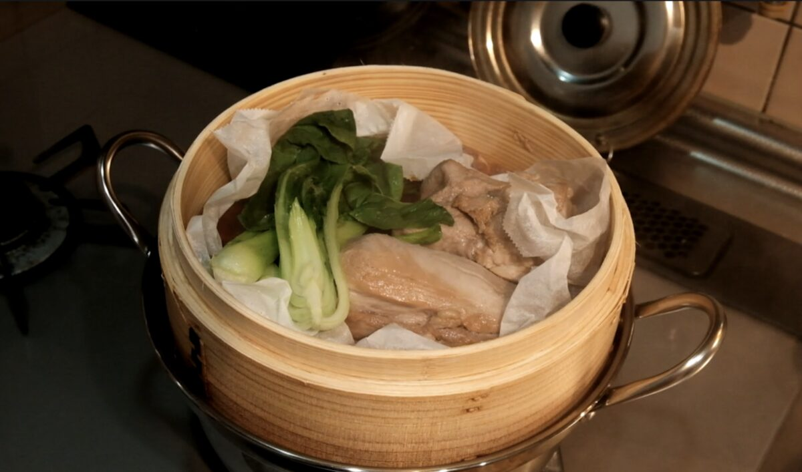
私は、疲れて料理する余裕がない日や、ヘルシーに食べたい日によく使っています。
食材を頑張って切って詰めるだけなので、
どうしても時間がない時は、朝に切って夜に詰めて蒸すだけでも、十分素敵な夕飯に。
目に入るところに出しっぱなしにしておくだけで、
料理のモチベーションが上がるのもお気に入りです。
初めて買ったせいろのサイズは18cm。
もう少し色々な料理に挑戦したいと思って、24cmを後から買い足しました。
18cmと24cmの詳しい比較は、『せいろを買い足したら、料理がもっと好きになりました』の記事にまとめています。
気になるところは、他の道具に比べて少し繊細なこと。
しっかり乾かさないとカビが生えたり、経年劣化で割れてしまったりします。
冬場に週3〜4回ほど使い込んだら、1年半ほどで1つ割れてしまいました。
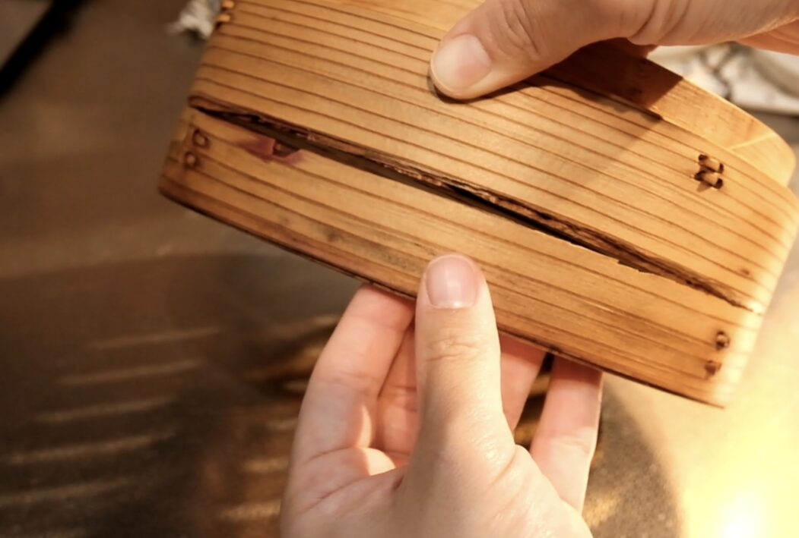
それでも「やっぱりこれじゃないと」と思って買い直すくらい、なくてはならない道具です。
［［杉せいろ 18cm］］
［［杉せいろ 24cm］］
2. ストウブ ピコ・ココット ラウンド 18cm グレナディンレッド
型番：40509-819
選んでいる一番の理由は、食材の旨味を最大限に引き立ててくれるから。
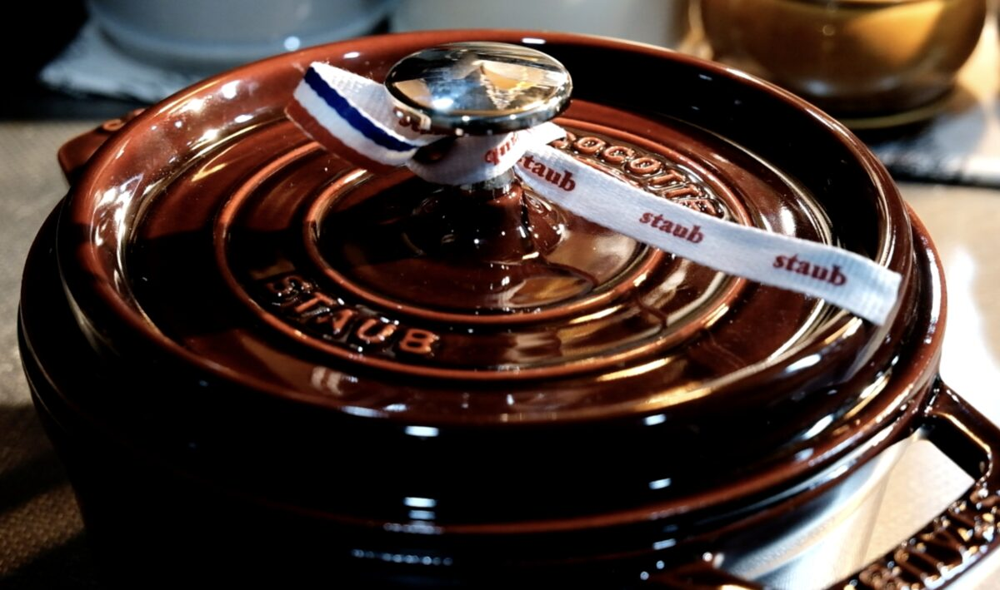
蓋の裏にある「ピコ」という突起が、食材から出た蒸気を水滴にして、
雨のように降らせてくれます。
そのおかげで食材がパサつかず、ふっくらジューシーに仕上がります。
煮込みや蒸し焼きにすると、短時間で中まで均一に火が入ります。
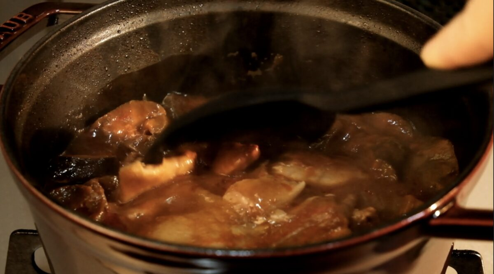
18cmを選んだのは、気に入ったグレナディンレッドが18cmしかなかったから笑
買ったときは、ちょっとした煮込みに使うくらいかなと思っていましたが、
意外と容量がしっかりあって、カレーやスープにも使えました。
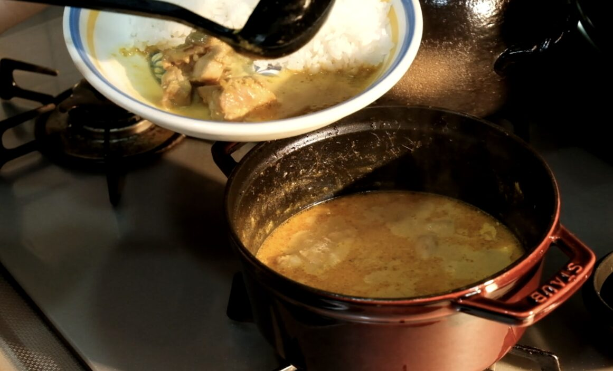
大きすぎないので、野菜のブレゼ(蒸し煮)のような副菜づくりにも便利。
2人分の料理には、ちょうどいいサイズでした。
この可愛いカラーを見るたびに、テンションが上がります。
気になるところは、とにかく重いこと。
以前、母が使ったときに「手首が痛い」と言っていました。
重さが気になる方は、店頭で一度持ってみるのがおすすめです。
［［ピコ・ココット ラウンド 18cm］］
3. バッラリーニ ローマ フライパン 20cm(ガス火専用)
型番：75001-794
買うきっかけは、鉄のフライパンで餃子を焼いていたら、
皮が全部張り付いて、中身と皮が分解して台無しに….。
嫌になって、張り付きにくいフライパンを探して、バッラリーニにたどり着きました。
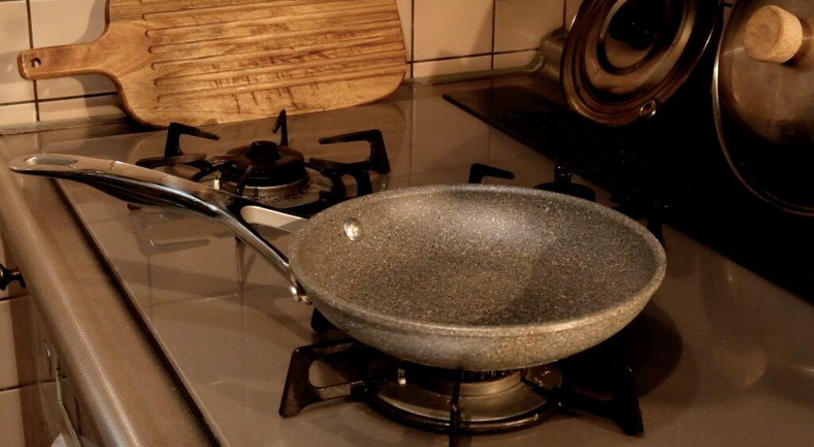
底がしっかり厚いので、食材に熱が均一に伝わって、おいしくきれいに焼けます。
ホットケーキやソテー、餃子など「ムラなく焼き上げたい」ときに便利です。
張り付かず、するんと食材が落ちるのは気持ちがいいです。
20cmは少し小さめですが、お弁当用にちょっと焼きたいときや、
朝食のソーセージや目玉焼きにちょうどいいサイズ。
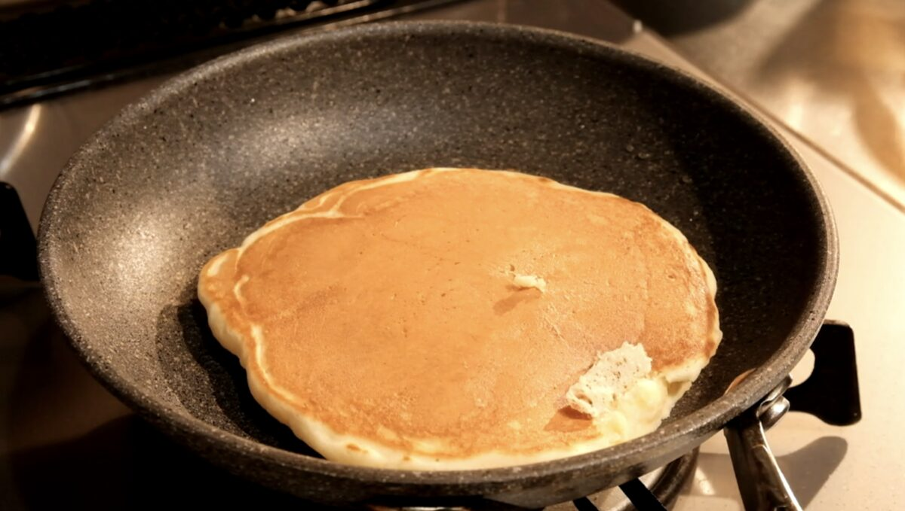
洗うときも、水で下洗いしてスポンジで軽くこするだけできれいになります。
お手入れが楽で、簡単においしく焼けるのが魅力です。
石のような美しいデザインと、高級感のあるステンレスハンドルの組み合わせがお気に入りです。
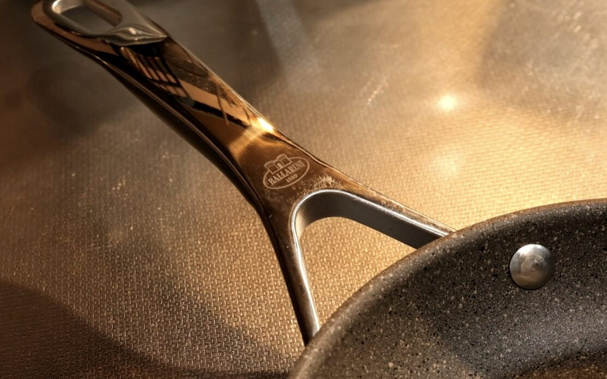
気になるところは、コーティングを長持ちさせるために、
強火はNG、油は少量でも必ず引くこと。
強い火力でガシガシ使いたいときは、鉄のフライパンと使い分けています。
なお、こちらはガス火専用のモデルです。IHでお使いの方は対応モデルをお選びください。
［［バッラリーニ ローマ フライパン 20cm］］
4. 中尾アルミ 打出ペリカン雪平鍋(目盛付) 18cm
型番：N-34／ガス火専用(IH不可)
味噌汁用に使っていた片手鍋の持ち手が壊れてしまい、しばらく両手鍋で作っていました。
でも両手鍋だと、お椀に注ぐときに両手が塞がってしまいます。
鍋の底に張り付いた具を取るのに、振ってみたり、お玉で地道にすくったり…。
そんな何気ない動作ができないのが、地味にストレスでした。
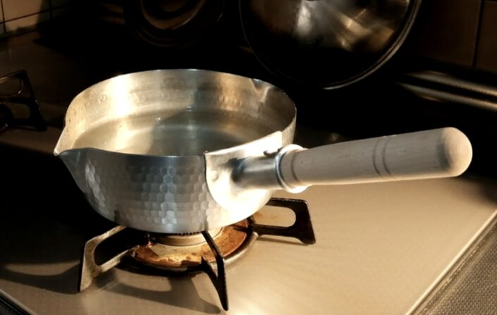
そんなときに出会ったのが、この打出ペリカン雪平鍋です。
注ぎ口があるので、味噌汁用にぴったりだ！思って購入しました。
持ってみると、とにかく軽い。
軽いと、自然に手に取る回数が増えていきます。
毎日の味噌汁づくりや食材の下ゆでに活躍しています。
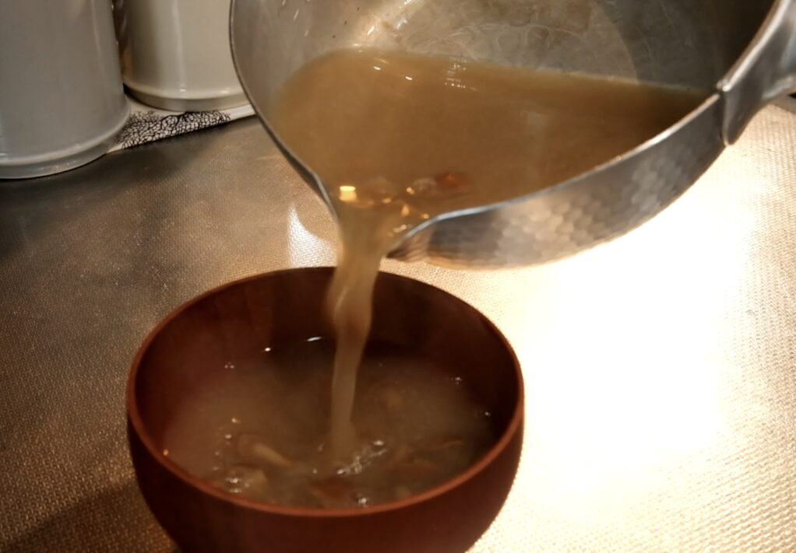
両側に注ぎ口がついているので、利き手を選ばずスムーズに汁物を移し替えられるのが楽です。
液だれもしないし、軽くて手に負担がないところも気に入っています。
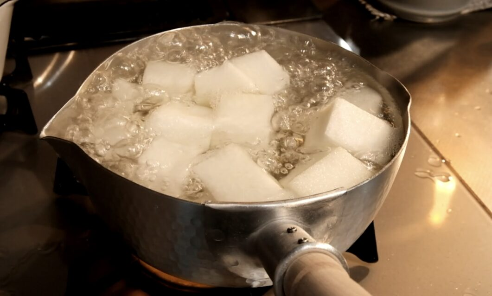
気になるところは、水を入れすぎると、沸騰したときに注ぎ口からお湯が噴き出てしまうこと。
水をギリギリまで入れないように、注意しています。
［［打出ペリカン雪平鍋18㎝］］
5. イブキクラフト TOOLS GRILLER
型番：422019
友人からの贈り物で、すっかり気に入ってしまった道具です。
「魚焼きグリルに食材をそのまま置けばいいのでは」と思われるかもしれませんが、
蓋をしてグリルに入れることで、蒸気が中で循環してくれます。
最初は蓋をしてふっくら蒸し焼き、後半は蓋を取って焼き目をつけると、
おいしく焼き上がります。
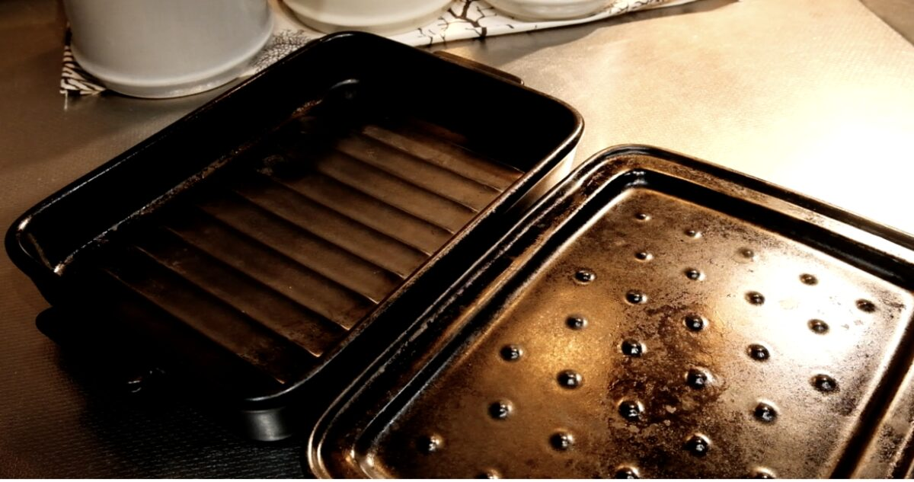
私は、冷凍の魚を焼くのによく活用しています。
ふるさと納税で大量の冷凍サバを買って、20匹以上をこのGRILLERで焼きました。
冷凍サバを水で軽く洗って、キッチンペーパーで水気を拭き取り、料理酒をふって蓋をして焼く。
そのあと蓋を取って表面に焼き目をつけると、とてもおいしくなります。
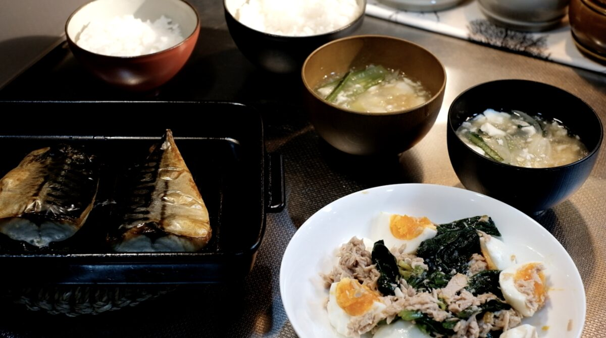
レンジやオーブン、直火にも対応していますが、
魚焼きグリルが一番焼き時間が短くて使いやすいです。
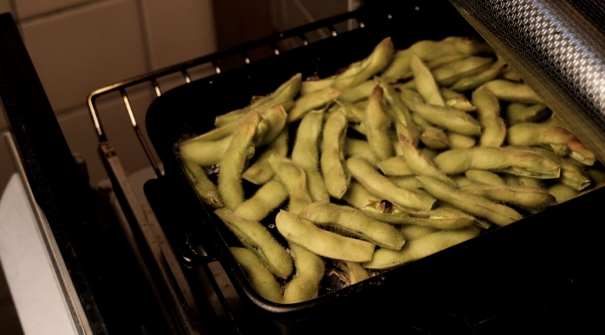
また、グリルの下に魚の汁が垂れることがないので、汚れにくく
魚焼きグリルの後片付けがとても楽。
黒色だと汚れや焦げが目立たないのもお気に入りです。
気になるところは、焼き上がりの陶器がとにかく熱々になること。
取り出すときのやけどには、毎回しっかり注意しています。
［［GRILLER］］
6. OXO アングルドメジャーカップ 500ml
型番：1114980J
計量カップを使うたびに、腰を落として横から目盛りを見て微調整するのが、
地味にストレスでした。
計量カップくらい100均のもので十分、と思っていたのですが、
使うたびにストレスが溜まるのは嫌だなと。
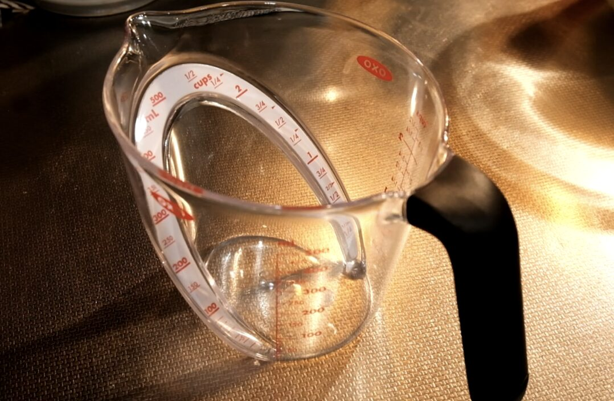
少し高いけれど、上から見て調整できるとどんなものだろう、と試してみたら
これがものすごく便利でした。
わざわざ横から覗き込まなくても、上から見下ろすだけでパッと計れます。
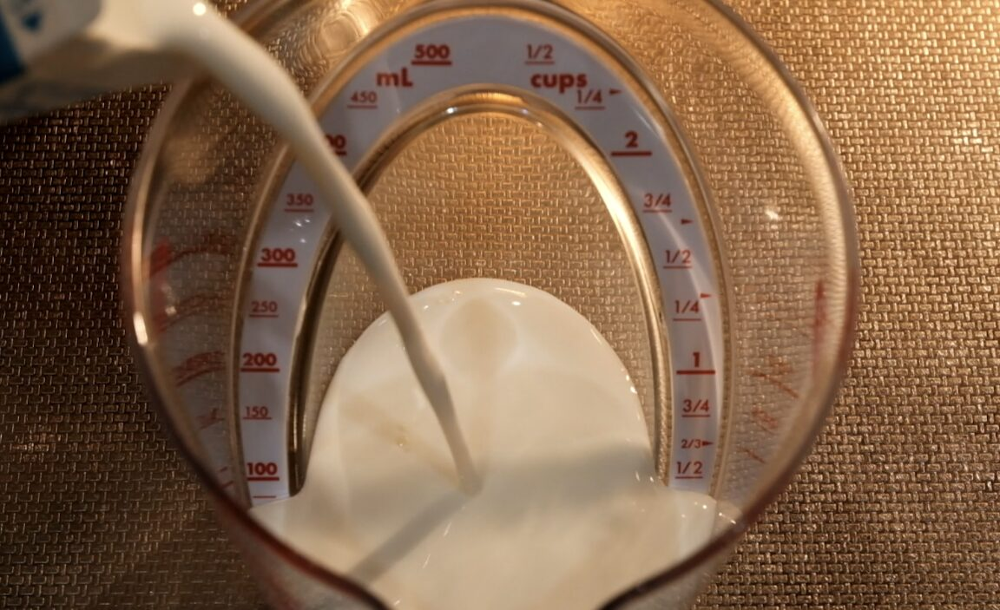
目盛りの印刷が内側に挟まれているので、
使っているうちにめくれたり消えたりする心配もありません。
ガラス製ではないので軽くて、ハンドルもすごく握りやすい。
今のところ気になるデメリットはなく、我が家の隠れた名脇役です。
［［アングルドメジャーカップ 500ml］］
最後に
今回は、私のずっと使い続けたいキッチン道具を6つご紹介しました。
どれも、壊れてもまた買い直したいと思えるものばかりです。
お気に入りの道具に出会うきっかけになればうれしいです。
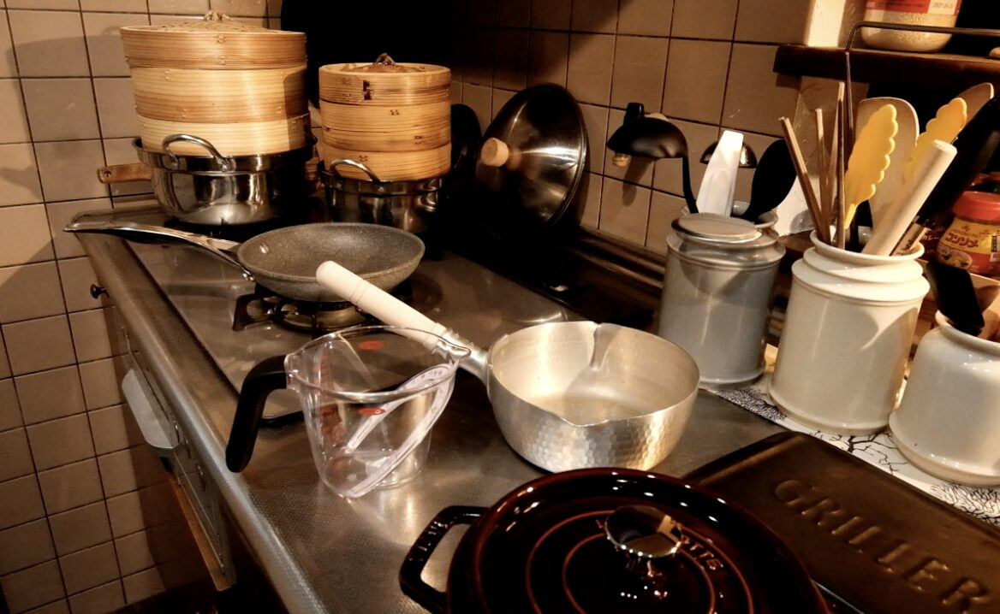